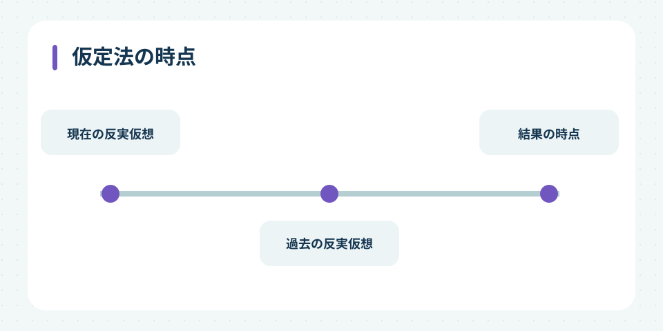

仮定法過去・仮定法過去完了
仮定法は「現実とは違うこと」を表す文法。現在の事実と反する想像なのか、過去の事実と反する想像なのかを区別すると、空所補充も英作文も安定します。
このページで学べること
「もし〜なら」を時制で見分ける。要点を読んだら、最後の確認問題で理解度をチェックしましょう。
基本の形を2つ覚える

| 種類 | if節 | 主節 | 意味 |
|---|---|---|---|
| 仮定法過去 | 過去形（be動詞は were が基本） | would / could / might + 原形 | 今の事実に反する想像 |
| 仮定法過去完了 | had + 過去分詞 | would / could / might + have + 過去分詞 | 過去の事実に反する想像 |
If I were you, I would study tonight.
もし私があなたなら、今夜勉強するのに。（現実には「あなた」ではない）If she had left earlier, she would have caught the train.
彼女がもっと早く出発していたら、その電車に間に合っただろうに。見分けるポイント
「過去」という名前でも、仮定法過去が表すのは現在です。過去形にずらすことで、現実からの距離を表します。
if節に had + 過去分詞 が見えたら、主節の would have + 過去分詞 を第一候補にしましょう。なお could は「できただろう」、might は「かもしれなかった」というニュアンスを加えます。
直説法との違い
If it rains tomorrow, I will stay home. は実際に雨が降る可能性がある条件文です。一方、If I had wings, I could fly. は現実に翼がないことを踏まえた仮定法。起こり得る条件か、現実と反する想像かで判断します。
確認問題に挑戦！
全3問。答えを考えてから「解答と解説を見る」を押してね。
If I ( ) rich, I would travel around the world.
解答と解説を見る ＋
were
主節が would + 原形のため、現在の事実と反する仮定法過去。be動詞には were が基本です。
If he had studied harder, he ( ) the exam.
解答と解説を見る ＋
would have passed
過去の反実仮想なので、主節は would have + 過去分詞。
「もし時間があれば、あなたを手伝えるのに」を英訳しよう。
解答と解説を見る ＋
If I had time, I could help you.
現在の事実とは異なる想像なので had / could help を使います。
仮定法過去＝現在、仮定法過去完了＝過去。名称より「意味の時点」で判断しよう。
ここまで読めたら、ひと区切り。
理解できたら学習済みにチェックして、次の記事へ。
StudyMasterの無料学習コンテンツです。AIを補助的に用いて作成しています。例題・解答は公開前にご自身でも確認してください。内容に誤りがある場合は、学校の教科書などと照合してください。
公開・更新：2026年11月12日